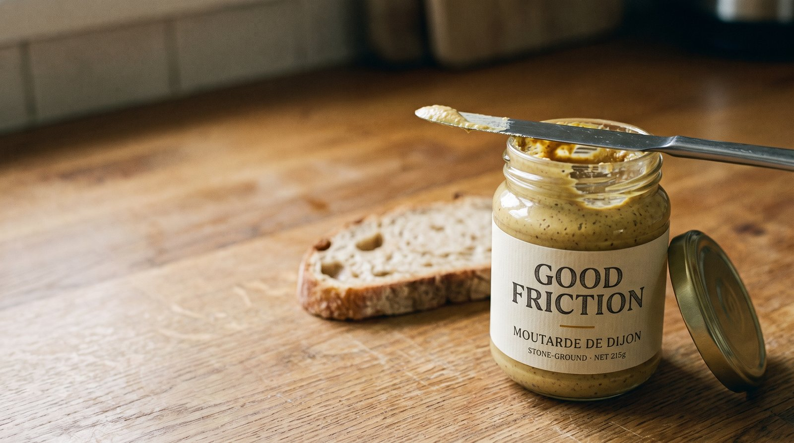

What the Sandwich Was For
Convenience rarely argues that what you lost was worthless. It just quietly redraws what you were doing until the loss stops counting.

The squeeze bottle met me at the fridge door. Grey Poupon, now in a plastic yield-to-pressure format, one hand, no twist, no knife if you don’t want one. More convenient by every measure anyone would write down. And the sandwich came out a little hollow, in a way that has nothing to do with mustard.
Worth being precise about what left, because “making a sandwich felt better in the old days” is not an argument, it’s a mood. The jar held a short sequence of small authored acts. Unscrew the lid. Pick the knife. Dip, judge the amount, spread, read the bread, go back for more. Each step is a place where you make a choice and leave a mark, and the sandwich comes out a little bit yours. The bottle collapses the whole sequence into one gesture. What the bottle removed was not the labor. Labor is a cost, and nobody mourns a cost. What it removed was the surface area where you were the author.
The cost underneath the convenience
My wife caught the rest of it at dinner. The squeeze bottle holds almost twice the mustard for the same price. Sit with that, because it rearranges the whole story. The bottle was not built to spare my wrist. It ships lighter than glass, it does not shatter, it fills faster on the line, it stacks more product per pallet, and every one of those is a cost pulled out of somebody’s supply chain. The convenience was the wrapping. The cost reduction was the real gift, and the gift went to the people who make the mustard, not to me. What got sold to me as my friction removed was, underneath, their cost removed, handed back with a bow on it and the word value.
I know how the bow gets tied, because I used to tie it. A long stretch of my career ran inside this machine, in rooms where the work was to find the cost worth taking out and the story worth telling about why its removal was a kindness to the shopper. We were good at it. I believed most of it. Standing at my own refrigerator now, holding the output of a process I used to run, I am rethinking a fair amount of it.
None of which makes cheaper a crime. Cheaper insulin removed a gate and formed nothing worth keeping, and thank God for it. The tell is not the lower price. The tell is when the only way to reach it was to shrink the thing itself, past the part that was doing the forming. Insulin got cheaper without becoming less insulin. The sandwich got cheaper by quietly becoming less of a thing I made.
Friction that forms, friction that gates
Hold all of this away from nostalgia before it curdles into it, because most friction deserves exactly the death it got. A woman in 1965 needing her husband’s signature to open a bank account. A flight of stairs in front of a wheelchair. Driving across town to look up one fact. None of that built anything. It only stood in the way and sorted people by who could afford to push through. So friction is not sacred, and anyone defending it in general is defending the signature law by accident. The friction worth a second look is the narrow kind that makes something in you as a byproduct of the resistance. Call it the difference between friction that forms and friction that merely gates. The jar forms, a little. The signature law only gated. Any honest version of this argument lives or dies on keeping those two apart.
The engine is not any single removal. It’s the ratchet. Once the squeeze bottle exists, the jar stops being neutral and starts feeling like an imposition it never used to be. Each convenience resets the floor, so the next bit of friction reads as unacceptable. The real loss is not the jar. It’s becoming a person for whom the jar is too much. Convenience doesn’t only remove friction, it lowers your tolerance for friction, and that tolerance was load-bearing for most of what forms a person.
The bottle is small. The pattern is not. Reading a paper map builds a model in your head: you know north, you know the river is on your left, you know the town sits in a bowl. Turn-by-turn navigation hands you an instruction stream and you arrive having built nothing, which is why people cannot draw the city they have lived in for a decade. That is still authorship friction, the mark left on you instead of on the sandwich. Getting lost is a different animal, and a sharper one. The map at least had a destination. Getting lost has none, and that is the point. You find the street you would never have routed to, the afternoon that happened only because the plan broke. Optimization is a machine for giving you more of what you already value. Getting lost is one of the last ways to collide with what you didn’t yet know existed, and you cannot specify it in advance, because the moment you can, it becomes a destination and the machine takes you straight there and the thing evaporates.
Then there is the oldest case, the one every person who has learned anything hard already knows in their hands. The struggle to understand is not the obstacle to understanding. The struggle is the understanding, happening. Hand someone the answer before the wrestling and you have not sped the learning up, you have deleted it, and left a person who can recognize the solution and reproduce none of it. Cognitive psychologists have a blunt name for this, desirable difficulty, the difficulty that feels like failing while it is in fact working. Fluency feels like learning and does nothing. Struggle feels like drowning and builds the whole thing.
Three objects, three ways friction forms: the mark you leave, the thing you meet, the capacity you build. And a market that removes all of it at once, because it cannot tell forming from gating and prices both at zero.
A test you can carry
So here is a test. Take the friction away and let the endpoint arrive anyway. If nothing is missing, the friction only gated you, and good riddance. If the value leaves with the effort, then the effort was the value. Teleport past the signature law and your bank account is there, whole. Gate. Teleport past the map and you arrive without the city in your head, because the city only ever got built in the navigating. Teleport past getting lost and you arrive on time, which is the one thing that kills it. Teleport past the struggle and you hold the right answer with no understanding behind it. In the first case the effort stood between you and the outcome. In the rest, the effort was the outcome, wearing a disguise.
The test has a moving part, and the moving part is the whole game. Name the endpoint narrowly and every friction on earth becomes a gate. The squeeze bottle is sold as “mustard on bread,” and against that endpoint it is telling the plain truth: nothing lost, the bottle wins, only a sentimental fool keeps the jar. The map is sold as “arrive at the address.” The struggle is sold as “produce the correct answer.” The market does not remove friction against your true endpoint. It first redefines your endpoint down to the narrowest version that still sounds like what you wanted, and then, against that version, it is not lying. The loss is real and the sales pitch is honest at the same time, because they are measuring two different things and only one of them got said out loud. Convenience wins the argument by quietly choosing the terms of it, one notch too small, every time, in a way that feels like precision rather than theft.
The narrowing has a motive, not just a habit. You shrink the endpoint because the shrunken one is the version you can deliver for less. Cost reduction is the engine. The small endpoint is how it travels.
The oldest pattern, the newest tool
None of this is new, which is the reassuring part and the alarming part. The philosopher Albert Borgmann named the pattern in 1984. He called it the device paradigm: a device delivers the commodity a thing used to provide, while hiding the engagement the thing used to demand, and he warned that as devices spread, the things that centered a life get converted into conveniences one by one. The jar is a thing. The bottle is a device. He saw the whole argument coming before the internet existed.
What is new is the limit case. A squeeze bottle redefines one endpoint and moves on. AI redefines the endpoint of thinking itself, which is the most redefinable thing you own, because you cannot watch your own mind from outside to check what got amputated. Ask it and it hands you the answer, and “the answer” is the narrow endpoint. The wider one, the judgment you would have built sitting lost in the problem for an hour, never gets named, so you never notice you traded it. Researchers at MIT ran the experiment this year, watching people write with and without an AI assistant, and the finding that matters is not that the assisted essays were worse. It is that the people who leaned on the tool first carried a deficit even after it was taken away, a thing the researchers called cognitive debt. Struggle first, then tool, and you gain. Tool first, then struggle, and you are in debt you cannot see. The order of operations is the entire difference, and the convenient order is the wrong one.
The feeling is in the air right now. A writer named Kathryn Jezer-Morton gave it a handle last winter, “friction-maxxing,” choosing the slower version on purpose, and it struck a nerve because people already felt the narrowing. The country’s biggest politics podcast spent this week on whether we should love our chatbots, and Ezra Klein kept circling back to one word. He put it flatly: friction is intrinsic to the relationships between human beings. He told a story about his own friendless adolescence, years of grinding against a social world that made no sense to him, years he hated, and said he is no longer sure that friction was not the thing that formed him.
Here is the turn, and it is the one that matters, because it is not a counsel of refusal. The same tool that will frictionlessly agree with you will also, if you aim it that way, refuse you. Klein said the most useful thing his AI ever did was tell him a plan was insane and point out that all he ever does is claim he’s too busy, meaner than a friend would have been. The frictionless chatbot and the one that pushes back are the same technology pointed at two different endpoints. Which means the fork was never the tool. It was the endpoint, and the endpoint is the one thing the machine cannot be trusted to set, because the market behind it has every reason to set it small.
At the fridge
Which leaves you where you started, at the open fridge, bottle in hand. You can take the convenience. Nobody is coming to confiscate the squeeze bottle, and choosing the jar as a lifestyle is its own theater, available mostly to people with time to spare. The only move left that holds is smaller and harder than choosing the jar. Before you accept the convenience, name the endpoint yourself, the real one, the wide one, before someone with a balance sheet names it for you one notch too small. They will, because I was once the someone. No product will do it for you. Every system you own is tuned so you never notice it needs doing. Take the bottle if you want. Just be the one who decided what the sandwich was for.
Pick an idea you believe but have not earned yet. Give the AI your real example, the small concrete thing, not the abstraction, and then let it try to take the idea apart. The goal is not a draft. The goal is finding out whether you have an argument or just a mood.
Act as a skeptical essayist who takes my idea seriously enough to try to break it. I want to defend something I half-believe but cannot yet prove: [state your claim in one sentence]. First, ask me for the one concrete example that made me believe it. Wait for my answer before going on. Then stop helping me decorate the idea and start stress-testing it. Find the strongest objection a sharp reader would raise. Show me where my own example works against me. Call it out if I am romanticizing the past, generalizing from a single case, or quietly relying on privilege the argument cannot afford. Give me the counter-case, not the compliment. Keep pushing until I can state, in one sentence, the discriminating test that sorts the cases I am defending from the cases I would concede. Do not let me off early. End by telling me which essay this actually wants to be, descriptive or prescriptive, and what it will cost me to say the real version out loud.
What comes back is not an essay. It is the one sentence you could not write on your own, the test that tells your forming friction from your gating friction, or whatever the equivalent line is for your idea. The squeeze bottle on the label started exactly here.